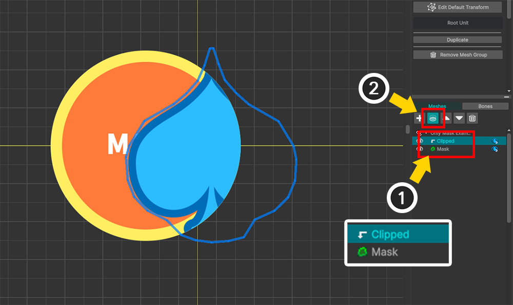

AnyPortrait > Manual > Mask Only Mesh
Mask Only Mesh
1.6.0
You can create some interesting effects by using the mesh only as a Mask without rendering it.
This page shows you how to set up a Mask Only Mesh that works only as a mask, and an interesting example using it.
Setting Mask Only Mesh

A simple example where we have a mesh to be used as a mask ("Mask") and a mesh to be clipped ("Clipped").

(1) Select the "Clipped" mesh.
(2) Click the Clipping Mask button to set it to be clipped from the "Mask".

(1) Select the "Mask" mesh.
(2) Click the "As Mask Only" button on the right UI.

You can see that the "Mask" mesh is rendered in green.
This means that the "Mask" mesh is not actually rendered, but is only providing a mask to the "Clipped" mesh.
It should not be rendered, but it is shown in green in the editor as shown above.
Let's make the Mask Only Meshes invisible in the editor.
(1) In the View menu, press "Show Meshes Without Mask" (shortcut: M ).
(1) You can see that the "Mask" mesh is not rendered in the editor, and only clipping rendering works.
(2) You can check whether the Mask Only Meshes are rendered through the icon.
Note
Pressing the M key will toggle the state in the workspace between "All meshes visible", "All meshes visible except mask-only meshes", and "No meshes visible".
If you check in the Unity scene, you can see that only the mesh that is clipped as above is rendered.
Creating a Portal effect

Let's create a portal effect using Mask Only Mesh.
(1) To create an effect where two portals ("Portal") are penetrated by an arrow mesh ("Arrow"), we placed the mask mesh ("Mask") as shown above.
(2) Select the "Mask" mesh and press the Open Mask Settings button.
(1) Create Mask Data for the "Mask" mesh.
(2) Register the "Arrow" mesh as the target mesh.
(3) Add a property of type "Alpha Mask Preset".
(4) Change the value of Mask Operation to "Inverse And".
This will invert the mask area.

(1) Close the Mask Setting Dialog and move the "Arrow" mesh.
It will look like it is disappearing between the portals.
(2) Select the "Mask" mesh.
(3) Press the As Mask Only button.
As the "Mask" mesh becomes a Mask Only Mesh, the effect of an "Arrow mesh penetrating portals" is completed as shown above.